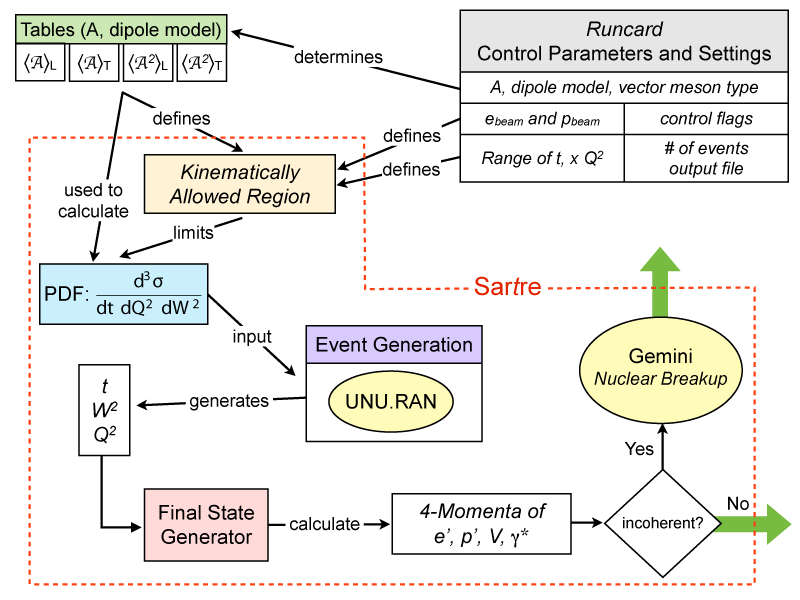

| Home · Overview · Users Guide · Reference Guide |
Sartre is a class library that lets you easily assemble a program
that fits your needs. Typically your setup will consist of a main program
and a
runcard, i.e., a text file with instruction read by Sartre,
that defines various parameters such as beam energies, what model to
use, what vector meson species to generate, the number of events, and
much more. Sartre has a built-in mechanism to take care of
this. The main class the user has to deal with is
Sartre.
Necessary subclasses can be obtained via access functions of Sartre.
The class EventGeneratorSettings deals
with the setup parameters and the complete structure of the generated
event is returned in an instance of the Event class. Sartre
has no predefined output format. The provided example program sartreMain.cpp contains
an example on how to store the generated events in a ROOT file for later
processing.
In this Users Guide we discuss the general idea of Sartre, how it functions, and how to use it. For detailed information on classes please see the Reference Guide.
It is helpful to understand the basics of how Sartre actually works, The figure below illustrate (in a very schematic fashion) the inner working of the Sartre event generator.

The user provides the energies of the incoming beams, the hadron beam mass (A), sets the range in t, W , and Q2 he or she wants to generate, defines which dipole model to use, what vector meson to generate, and much more. The values are typically defined in a so called runcard, a user provided text file, that is passed to Sartre during initialization. From the given parameters Sartre first determines which amplitude (mean and variance) tables are to be used. Table exist for the bSat and the bNonSat models, for the three vector mesons ρ, φ, and J/ψ s well as for DCVS. Sartre currently contains tables for several nuclei reaching from light to heavy. The beam energies, the table range and the user requested limits determine the kinematic range in W ,Q2, and t. Sartre used the tables to calculate a 3-dimensional probability density function (pdf) that is essentially the triple differential cross-section d3σ/(dt dW2 dQ2). This pdf is used in UNU.RAN, a random generation package that provides a random generatos for multivariate continuous distributions, which then generates random number triplets for t, W2 , and Q2 accordingly. This triplet is then fed into a final state generator that calculates the final state particles, i.e., the scattered electron and proton/nuclei, the vector meson, and the virtual photon. Note that t, W, and Q2 completely determine the final state with the exception of the azimuthal angles which are chosen randomly. In case the event is incoherent a diffractive mass is generated and converted into an excitation energy that is used to breakup the nucleus. We use the evaporation and fragmentation model Gemini to do that for us. The output, the event record, is available in full for the user for further processing.
Why t, W, and Q2 ? There are 3 independent variables needed. Since Sartre deals with diffractive events t is a given. The other two can be any combination of x, W, Q, y. Q2 seems rather obvious and intuitive. Since in the case of photoproduction x loses its importantance, W was picked as the 3rd variable. It is also the parameter that is easiest accessible in the experiment and it is numerically somewhat easier to handle. The static class Kinematics provides tools that let you easily (and correctly) transform one into the other if needed. The generated event records contains them all. Sartre
The final state particles are the scattered electron, the scattered proton/nucleus, and the created vector meson. For incoherent events the fragments of the broken nucleus are also provided. The vector mesons are not decayed in Sartre. This can be easily done at a later stage, e.g. in Geant. The Event class that contains the event record also holds information on the virtual photon.
The beam electron comes from the right meaning it has negative pz, the proton beam is coming from the left meaning it has positive pz. Energy, momenta, and masses are given in GeV, GeV/c, and GeV/c2, respectively. Lengths, such as impact parameter or dipole radii, are in fm (fermi/ femtometer), cross-sections are given in nb (nanobarn).
Sartre requires only one environment variable to be set: $SARTRE_DIR.
This variable should point to the directory where Sartre
is installed. It is used to locate the amplitude
lookup tables needed
in Sartre as well as the many tables required by Gemini to handle
the nuclear breakup for incoherent events. Since Sartre
is using ROOT libraries it is advisable to also have the environment
$ROOTSYS defined.
Most programs have a similar structure:
Typically you only need one instance of Sartre that you can initialize multiple times if needed. There are two ways of passing the setup parameters to Sartre: (i) using a runcard or (ii) programmatically. The advantage of a runcard is that you can change the setup without re-compiling the program; it also makes batch processing easier. Here's the example with a runcard:
1 #include "Sartre.h"
2
3 int main() {
4 Sartre sartre;
5 bool ok = sartre.init("myRuncard.txt");
6
7 // generate events if ok == true
8 // ....
9
10 return 0;
11 }
For details on runcard syntax and available commands see the runcard reference. To setup the run programmatically you need to define every parameter through an instance of EventGeneratorSettings that can be obtained from the instance of Sartre as shown here:
1 #include "Sartre.h"
2 #include "EventGeneratorSettings.h"
3
4 int main() {
5 Sartre sartre;
6
7 EventGeneratorSettings* settings = sartre.runSettings();
8
9 settings->setVerbose(true);
10 settings->setNumberOfEvents(10000);
11 settings->setVectorMesonId(333);
12 settings->setElectronBeamEnergy(20.);
13 settings->setHadronBeamEnergy(100);
14 settings->setDipoleModelType(bSat);
15 settings->setA(197); // Au
16 settings->setEnableNuclearBreakup(false);
17 settings->setQ2min(0.5);
18 // possibly more ...
19
20 bool ok = sartre.init();
21
22 settings->list(); // good habit: print all settings
23
24 // generate events if init() was successful (ok == true)
25 // ....
26
27 return 0;
28 }
Note that you have to setup Sartre before calling init(). For
several parameters, changes afterwards have no effect. Some, however, you
can change throughout the rest of the program. See EventGeneratorSettings reference
page for details.
Once Sartre is setup we are ready to generate events. This typically looks like this:
1 unsigned long maxEvents = settings->numberOfEvents();
2
3 for (unsigned long iEvent = 0; iEvent < maxEvents; iEvent++) {
4 5 // Generate one event
6 Event *event = sartre.generateEvent();
7 8 // Print out (here only for the first few events)
9 if (iEvent < 4) event->list();
14 }
Note, that in the example above we use the number of events to generate (maxEvents)
from the setting parameter (line 1). If you use a runcard the referring variable
would be numberOfEvents. You are of course free to use any number
you want but it is a good habit to do as shown in the example since then
the number of events can then be controlled through a runcard. Sartre::generateEvent() generates
a full event and returns a pointer to the object that holds the event (line
6).
The Event class contains the complete event structure. In the above example (line 9) we use Event::list() to show the complete event record for the first 4 events. Here is an example of how such a print-out looks like:
evt = 1 Q2 = 0.209 x = 1.259e-04
W = 40.793 y = 0.208
t = -0.010 xpom = 5.898e-03
pol = T diff = coherent
# id name status parents daughters px py pz E m
0 11 e- 4 - - 2 3 0.000 0.000 -20.000 20.000 5.110e-04
1 1000791970 Au(197) 4 - - 6 - 0.000 0.000 99.996 100.000 0.938
2 11 e- 1 0 - - - 0.014 -0.407 -15.839 15.844 5.110e-04
3 22 gamma 2 0 - 4 5 -0.014 0.407 -4.161 4.156 -0.458
4 443 J/psi 1 3 - - - -0.113 0.396 -3.572 4.745 3.097
5 990 pomeron 2 3 3 6 - 0.099 0.011 -0.589 -0.589 -0.100
6 1000791970 Au(197) 1 1 5 - - 0.099 0.011 99.406 99.411 0.938
The print-out starts with a block of general event properties, where pol is
the polarization of the virtual photon and diff indicates
if the event was coherent or incoherent. Sartre follows
the PDG numbering scheme to identify particles. All energies are in GeV,
all momenta in GeV/c, and masses in GeV/c2.
For a detail description of the event record we refer to the Event Record documentation.
The Sartre event generator requires a set of lookup tables in
order to work. These tables are kept in the $SARTRE_DIR/tables directory,
where $SARTRE_DIR is
an environment variable that needs to be defined and points to the Sartre
installation directory. Internally the tables are kept in ROOT 3D histograms.
Each setup requires at least 4 tables to hold the mean amplitude <A> and
the mean amplitude squared <A2>, each for longitudinally
and transversely polarized photons. Each set of tables is kept in a subdirectory
following the following scheme: A/model/VM_ID, where A is
the hadron beam mass, model the name of the used dipole model
(bSat, bNonSat, or bCGC), and VM_ID is the PDG particle ID
of the vector meson or photon.
Generating these tables is rather CPU extensive. So far only the following tables are available:
| p (A=1) | bSat | bNonSat |
|---|---|---|
| 22 (γ/DVCS) | yes | yes |
| 113 (ρ) | yes | yes |
| 333 (φ) | yes | yes |
| 443 (J/ψ) | yes | yes |
| Ca (A=40) | bSat | bNonSat |
|---|---|---|
| 22 (γ/DVCS) | yes | no |
| 113 (ρ) | yes | no |
| 333 (φ) | yes | no |
| 443 (J/ψ) | yes | no |
| Au (A=197) | bSat | bNonSat |
|---|---|---|
| 22 (γ/DVCS) | yes | yes |
| 113 (ρ) | yes | yes |
| 333 (φ) | yes | yes |
| 443 (J/ψ) | yes | yes |
There are several tools to inspect and query these tables. They are located
in the $SARTRE_DIR/bin directory. While they are mostly
meant for experts to verify the integrity of the tables one might be
of general interest: tableInspector. All table tools are
automatically build together with the Sartre library during
installation. The command takes one or several tables as argument and
prints the content type as well as the kinematic range in t,
Q2,
and W (W2), the latter being the most useful item for the
user. They typically have a set of useful options: -s to print
additional statistics or -a to print the content of the whole
table.
Starting with Sartre version 1.1 we also include a set of lookup tables for the logarithmic derivative of the amplitude along x (typically called λ) that is needed to calculate the skewedness and real amplitude corrections. λ values are derived from the referring ep table (also when running eA). If the kinematic range is not sufficient, that is if the amplitude table range used is larger than that of the λ table, we fallback to calculating the value on the fly from the referring ep table. If the latter is not large enough corrections are switched off. In any case the user is informed about what is happening.
Last Update: May 29, 2013 |